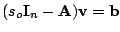
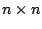
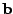
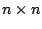
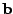
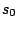
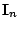
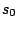
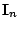
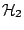

Dynamical systems are the basic framework for modeling and control of an enormous variety of complex systems. Direct numerical simulation of the associated models has been one of the few available means when goals include accurate prediction or control of complex physical phenomena. However, the ever increasing need for improved accuracy requires the inclusion of ever more detail in the modeling stage, leading inevitably to ever larger-scale, ever more complex dynamical systems.
Simulations in such large-scale settings can be overwhelming and make unmanageably large demands on computational resources, which is the main motivation for model reduction. The goal of model reduction is to produce a much lower dimensional system having the same input/output characteristics as the original. Recently, Krylov-based methods have emerged as promising candidates for reduction of large-scale dynamical systems.
The main cost in Krylov-based model reduction
is due to solving a set of linear systems of the form

where
 is an
 matrix,
 is an
is an
 matrix,
 is an
 -dimensional vector,  is a complex number called the
interpolation point and
 is the identity
matrix of size
-dimensional vector,  is a complex number called the
interpolation point and
 is the identity
matrix of size  . Since the need for more detail and
accuracy in the modeling stage causes the system dimension,
. Since the need for more detail and
accuracy in the modeling stage causes the system dimension,
 , to reach levels on the order of millions, direct
solvers for the linear system
are no longer feasible;
hence inexact solves need to be employed in Krylov-based
model reduction.
, to reach levels on the order of millions, direct
solvers for the linear system
are no longer feasible;
hence inexact solves need to be employed in Krylov-based
model reduction.
In this talk, we investigate the use of inexact solves in a Krylov-based model reduction setting and present the resulting perturbation effects on the underlying model reduction problem. We show that for a good selection of interpolation points, Krylov-based model reduction is robust with respect to the perturbations due to inexact solves. On the other hand, when the interpolation points are poorly selected, these perturbations are magnified through the model reduction process. We also examine stopping criteria, effective preconditioning, and restarting techniques in the particular context of model reduction. Finally, we incorporate inexact solves for the Krylov-based optimal  approximation. The result is an effective optimal model reduction algorithm applicable in realistic large-scale settings.